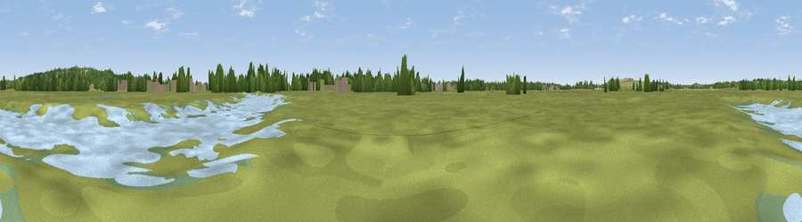

Viewpoint near Winter Gardens
#45201 in England · top 95% of its area beats it · near Winter GardensWhere it is
The exact computed spot (TQ 77322 84639). Click the marker for map links.
The view, rendered

A 360° render of this exact spot computed from the terrain model, tree cover and land cover — summer colours, afternoon light, calibrated against photographs of famous viewpoints. Real trees, hedges and buildings will differ in detail.
The panorama
Grey silhouette: terrain skyline in each direction (720 bearings, Earth curvature and refraction included). Dashed green: skyline with trees (+15 m) and buildings (+8 m) as obstacles. Blue strip: how far the ground is visible on each bearing.
Where the view opens
Wedge length = distance to the farthest visible ground on that bearing (vegetation-aware). Rings at 10, 25 and 50 km.
What fills the view
69% grassland · 13% woodland · 5% water · 5% wetland · 5% built-up · 2% cropland
Angular shares of the visible panorama (visual magnitude), not map area. Landscape diversity 0.47 (0–1 Shannon).
Key numbers
More beautiful places nearby
The staircase of upgrades: each row has a higher view potential than everything closer. Driving times are estimates from straight-line distance, calibrated against real road routing — check an actual route before setting out.
| Place | Direction | Drive | Score |
|---|---|---|---|
| Viewpoint near Winter Gardens | ESE · 0 km | ~1 min | 16.2 |
| Viewpoint near Coryton | SW · 2 km | ~5 min | 20.6 |
| Viewpoint near South Benfleet | NNE · 2 km | ~5 min | 50.3 |
| Viewpoint near South Benfleet | NE · 2 km | ~6 min | 59.8 |
| Viewpoint near Hadleigh | ENE · 3 km | ~8 min | 61.0 |
| Viewpoint near Birling | SSW · 24 km | ~40 min | 65.1 |
| Viewpoint near Shipbourne | SW · 37 km | ~56 min | 66.2 |
| Viewpoint near Charing | SSE · 38 km | ~57 min | 68.6 |
51.53281, 0.55516 · source: osm viewpoint · position refined by local search. Computed location — check access rights before visiting.